2026 Advanced Higher Biology - Paper 2 questions
Source: Scottish Qualifications Authority (SQA) / Qualifications Scotland. This is a StemInteract HTML companion, not an official HTML edition. Selectable text is supplied alongside original page images. Use the images or original PDF for equations, powers, fractions, vector notation, tables and diagrams; text extraction cannot fully preserve mathematical layout.
Jump to a question
PDF page 1
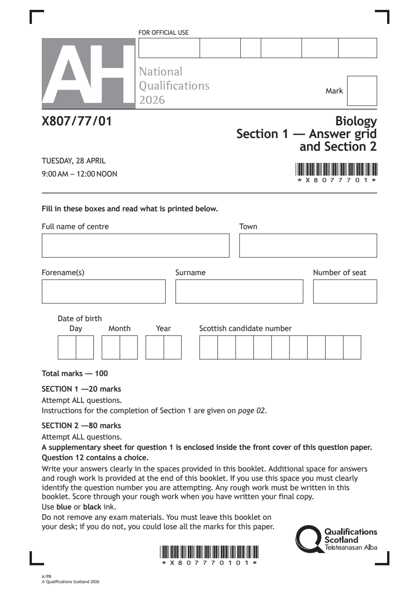
Selectable page text
FOR OFFICIAL USE
AH
National
Qualications
Mark
2026
X807/77/01 Biology
Section 1 — Answer grid
and Section 2
TUESDAY, 28 APRIL
9:00 AM – 12:00 NOON
*X8077701*
Fill in these boxes and read what is printed below.
Full name of centre Town
Forename(s) Surname Number of seat
Date of birth
Day Month Year Scottish candidate number
Total marks — 100
SECTION 1 —20 marks
Attempt ALL questions.
Instructions for the completion of Section 1 are given on page 02.
SECTION 2 —80 marks
Attempt ALL questions.
A supplementary sheet for question 1 is enclosed inside the front cover of this question paper.
Question 12 contains a choice.
Write your answers clearly in the spaces provided in this booklet. Additional space for answers
and rough work is provided at the end of this booklet. If you use this space you must clearly
identify the question number you are attempting. Any rough work must be written in this
booklet. Score through your rough work when you have written your final copy.
Use blue or black ink.
Do not remove any exam materials. You must leave this booklet on
your desk; if you do not, you could lose all the marks for this paper.
*X807770101*
A/PB
© Qualifications Scotland 2026PDF page 2
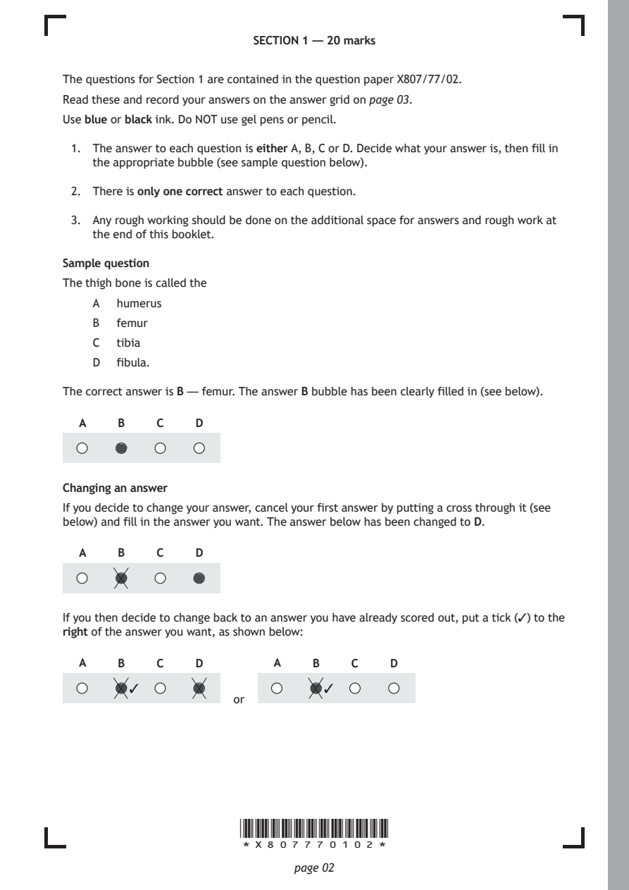
Selectable page text
SECTION 1 — 20 marks
The questions for Section 1 are contained in the question paper X807/77/02.
Read these and record your answers on the answer grid on page 03.
Use blue or black ink. Do NOT use gel pens or pencil.
1. The answer to each question is either A, B, C or D. Decide what your answer is, then fill in
the appropriate bubble (see sample question below).
2. There is only one correct answer to each question.
3. Any rough working should be done on the additional space for answers and rough work at
the end of this booklet.
Sample question
The thigh bone is called the
A humerus
B femur
C tibia
D fibula.
The correct answer is B — femur. The answer B bubble has been clearly filled in (see below).
A B C D
Changing an answer
If you decide to change your answer, cancel your first answer by putting a cross through it (see
below) and fill in the answer you want. The answer below has been changed to D.
A B C D
If you then decide to change back to an answer you have already scored out, put a tick (✓) to the
right of the answer you want, as shown below:
A B C D A B C D
or
*X807770102*
page 02PDF page 3
Selectable page text
SECTION 1 — Answer grid
*OBJ20AD1*
A B C D
1
2
3
4
5
6
7
8
9
10
11
12
13
14
15
16
17
18
19
20
*X807770103*
page 03 [Turn overPDF page 4
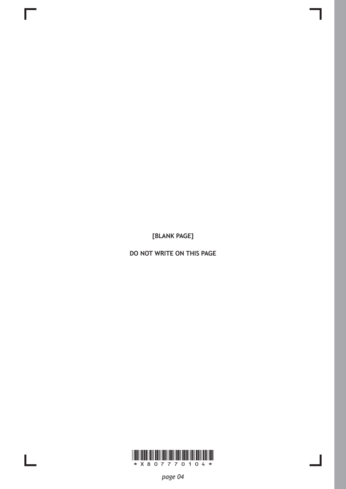
Selectable page text
[BLANK PAGE]
DO NOT WRITE ON THIS PAGE
*X807770104*
page 04PDF page 5
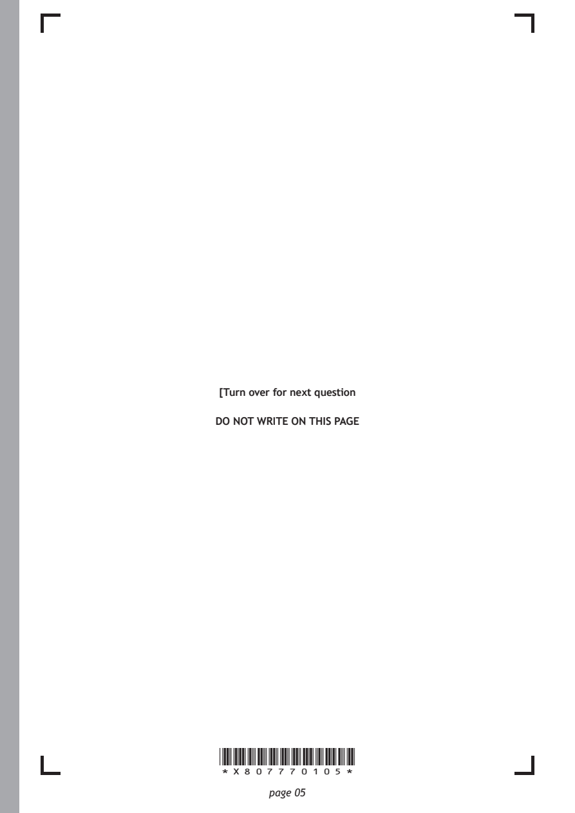
Selectable page text
[Turn over for next question
DO NOT WRITE ON THIS PAGE
*X807770105*
page 05PDF page 6
Paper 2, Question 1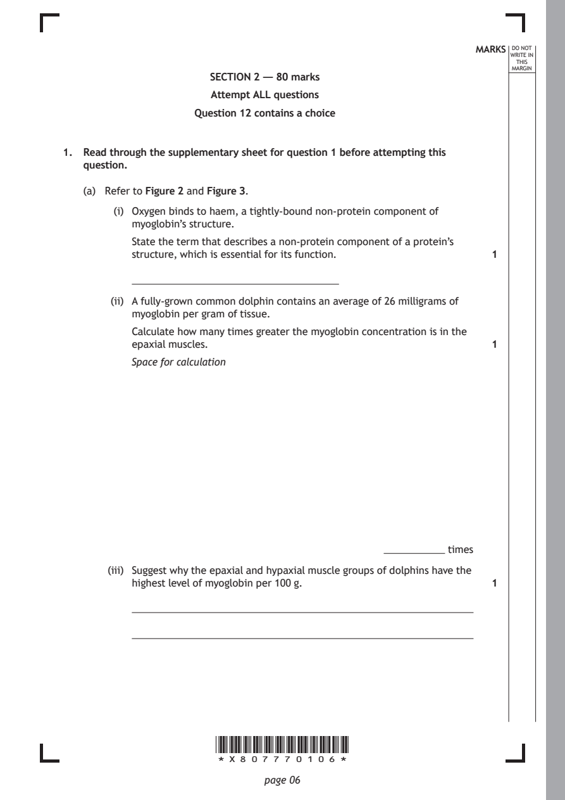
Selectable page text
MARKS _{W}^{D}_{R}^{O}_{I} _{T}^{N}OT
E IN
THIS
MARGIN
SECTION 2 — 80 marks
Attempt ALL questions
Question 12 contains a choice
1. Read through the supplementary sheet for question 1 before attempting this
question.
(a) Refer to Figure 2 and Figure 3.
(i) Oxygen binds to haem, a tightly‑bound non‑protein component of
myoglobin’s structure.
State the term that describes a non‑protein component of a protein’s
structure, which is essential for its function. 1
(ii) A fully‑grown common dolphin contains an average of 26 milligrams of
myoglobin per gram of tissue.
Calculate how many times greater the myoglobin concentration is in the
epaxial muscles. 1
Space for calculation
��������������������� times
(iii) Suggest why the epaxial and hypaxial muscle groups of dolphins have the
highest level of myoglobin per 100 g. 1
*X807770106*
page 06PDF page 7
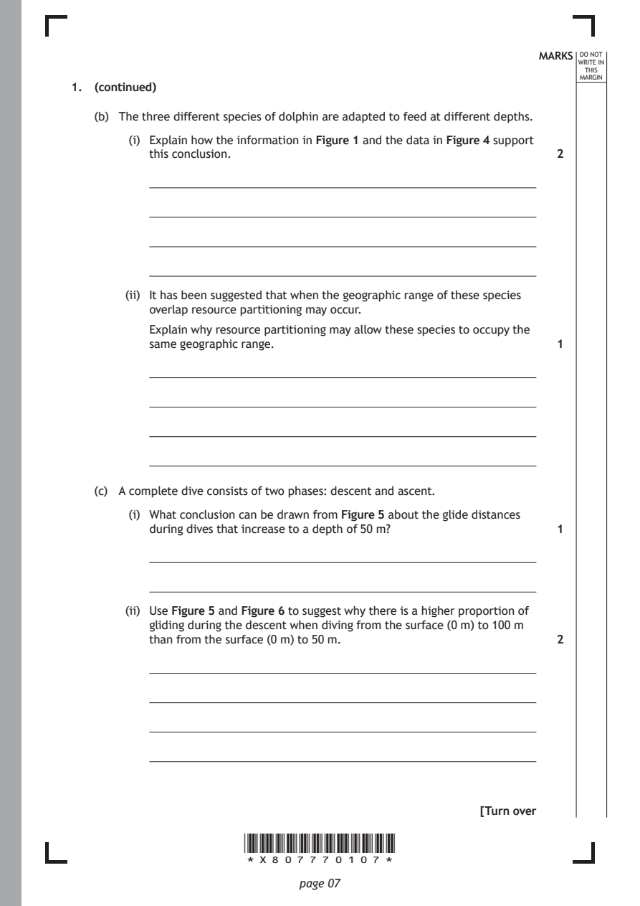
Selectable page text
MARKS _{W}^{D}_{R}^{O}_{I} _{T}^{N}OT
E IN
THIS
MARGIN
1. (continued)
(b) The three different species of dolphin are adapted to feed at different depths.
(i) Explain how the information in Figure 1 and the data in Figure 4 support
this conclusion. 2
(ii) It has been suggested that when the geographic range of these species
overlap resource partitioning may occur.
Explain why resource partitioning may allow these species to occupy the
same geographic range. 1
(c) A complete dive consists of two phases: descent and ascent.
(i) What conclusion can be drawn from Figure 5 about the glide distances
during dives that increase to a depth of 50 m? 1
(ii) Use Figure 5 and Figure 6 to suggest why there is a higher proportion of
gliding during the descent when diving from the surface (0 m) to 100 m
than from the surface (0 m) to 50 m. 2
[Turn over
*X807770107*
page 07PDF page 8
Paper 2, Question 2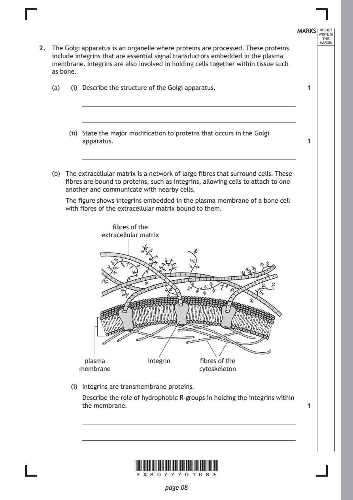
Selectable page text
MARKS _{W}^{D}_{R}^{O}_{I} _{T}^{N}OT
E IN
THIS
MARGIN
2. The Golgi apparatus is an organelle where proteins are processed. These proteins
include integrins that are essential signal transductors embedded in the plasma
membrane. Integrins are also involved in holding cells together within tissue such
as bone.
(a) (i) Describe the structure of the Golgi apparatus. 1
(ii) State the major modification to proteins that occurs in the Golgi
apparatus. 1
(b) The extracellular matrix is a network of large fibres that surround cells. These
fibres are bound to proteins, such as integrins, allowing cells to attach to one
another and communicate with nearby cells.
The figure shows integrins embedded in the plasma membrane of a bone cell
with fibres of the extracellular matrix bound to them.
fibres of the
extracellular matrix
plasma integrin fibres of the
membrane cytoskeleton
(i) Integrins are transmembrane proteins.
Describe the role of hydrophobic R‑groups in holding the integrins within
the membrane. 1
*X807770108*
page 08PDF page 9
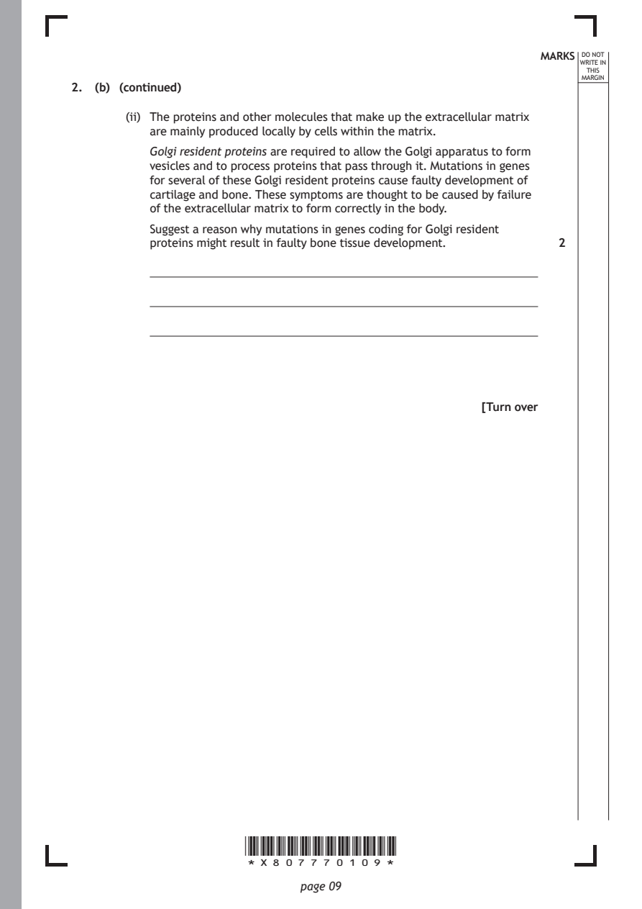
Selectable page text
MARKS _{W}^{D}_{R}^{O}_{I} _{T}^{N}OT
E IN
THIS
MARGIN
2. (b) (continued)
(ii) The proteins and other molecules that make up the extracellular matrix
are mainly produced locally by cells within the matrix.
Golgi resident proteins are required to allow the Golgi apparatus to form
vesicles and to process proteins that pass through it. Mutations in genes
for several of these Golgi resident proteins cause faulty development of
cartilage and bone. These symptoms are thought to be caused by failure
of the extracellular matrix to form correctly in the body.
Suggest a reason why mutations in genes coding for Golgi resident
proteins might result in faulty bone tissue development. 2
[Turn over
*X807770109*
page 09PDF page 10
Paper 2, Question 3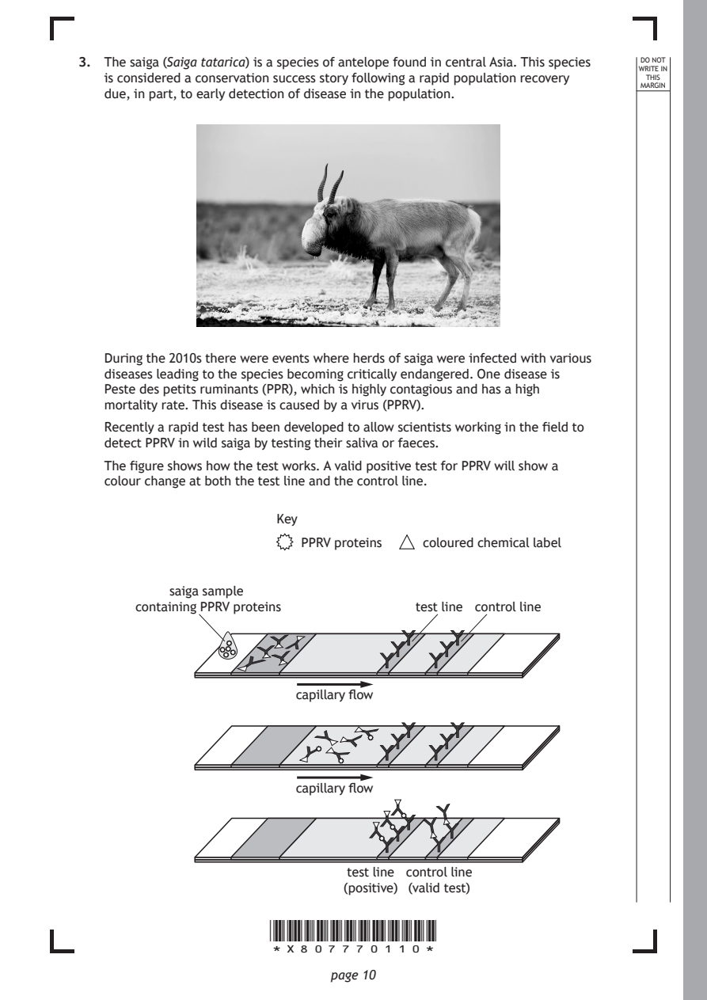
Selectable page text
3. The saiga (Saiga tatarica) is a species of antelope found in central Asia. This species DO NOT
WRITE IN
is considered a conservation success story following a rapid population recovery THIS
MARGIN
due, in part, to early detection of disease in the population.
During the 2010s there were events where herds of saiga were infected with various
diseases leading to the species becoming critically endangered. One disease is
Peste des petits ruminants (PPR), which is highly contagious and has a high
mortality rate. This disease is caused by a virus (PPRV).
Recently a rapid test has been developed to allow scientists working in the field to
detect PPRV in wild saiga by testing their saliva or faeces.
The figure shows how the test works. A valid positive test for PPRV will show a
colour change at both the test line and the control line.
Key
PPRV proteins coloured chemical label
saiga sample
containing PPRV proteins test line control line
capillary flow
capillary flow
test line control line
(positive) (valid test)
*X807770110*
page 10PDF page 11
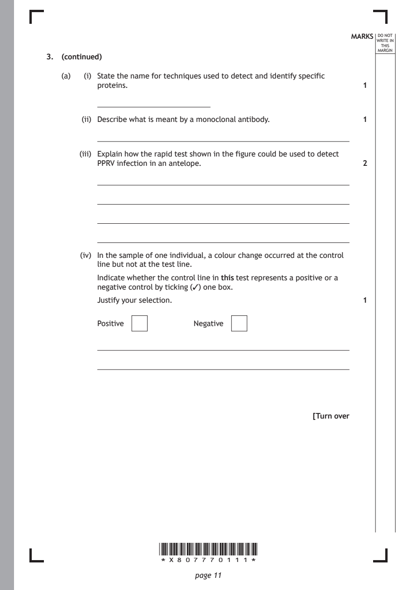
Selectable page text
MARKS _{W}^{D}_{R}^{O}_{I} _{T}^{N}OT
E IN
THIS
MARGIN
3. (continued)
(a) (i) State the name for techniques used to detect and identify specific
proteins. 1
(ii) Describe what is meant by a monoclonal antibody. 1
(iii) Explain how the rapid test shown in the figure could be used to detect
PPRV infection in an antelope. 2
(iv) In the sample of one individual, a colour change occurred at the control
line but not at the test line.
Indicate whether the control line in this test represents a positive or a
negative control by ticking (✓) one box.
Justify your selection. 1
Positive Negative
[Turn over
*X807770111*
page 11PDF page 12
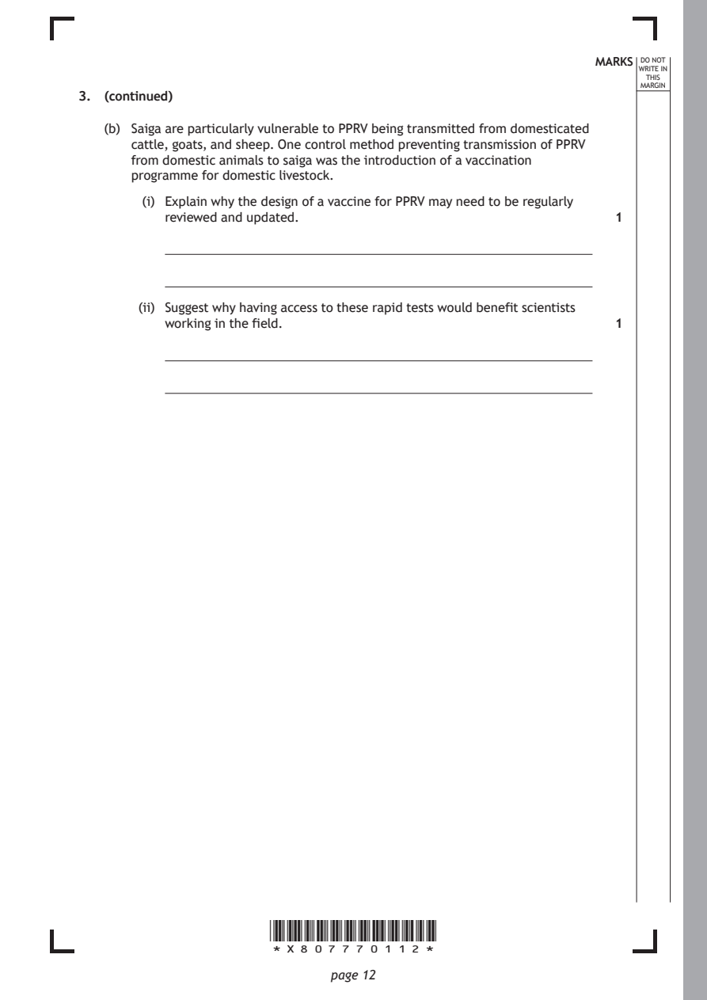
Selectable page text
MARKS _{W}^{D}_{R}^{O}_{I} _{T}^{N}OT
E IN
THIS
MARGIN
3. (continued)
(b) Saiga are particularly vulnerable to PPRV being transmitted from domesticated
cattle, goats, and sheep. One control method preventing transmission of PPRV
from domestic animals to saiga was the introduction of a vaccination
programme for domestic livestock.
(i) Explain why the design of a vaccine for PPRV may need to be regularly
reviewed and updated. 1
(ii) Suggest why having access to these rapid tests would benefit scientists
working in the field. 1
*X807770112*
page 12PDF page 13
Paper 2, Question 4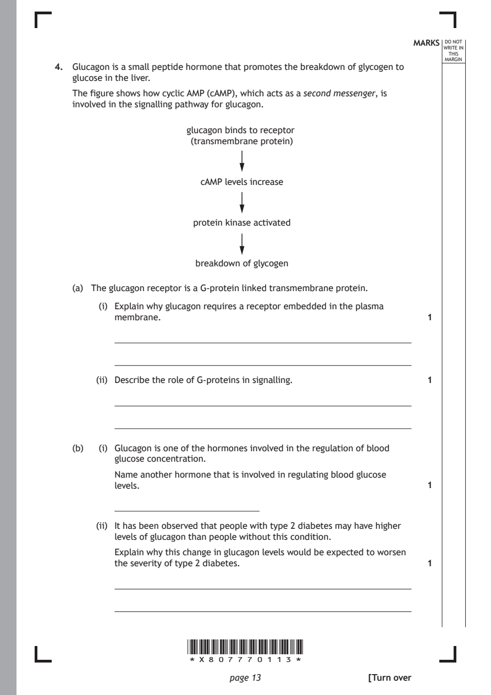
Selectable page text
MARKS _{W}^{D}_{R}^{O}_{I} _{T}^{N}OT
E IN
THIS
MARGIN
4. Glucagon is a small peptide hormone that promotes the breakdown of glycogen to
glucose in the liver.
The figure shows how cyclic AMP (cAMP), which acts as a second messenger, is
involved in the signalling pathway for glucagon.
glucagon binds to receptor
(transmembrane protein)
cAMP levels increase
protein kinase activated
breakdown of glycogen
(a) The glucagon receptor is a G‑protein linked transmembrane protein.
(i) Explain why glucagon requires a receptor embedded in the plasma
membrane. 1
(ii) Describe the role of G‑proteins in signalling. 1
(b) (i) Glucagon is one of the hormones involved in the regulation of blood
glucose concentration.
Name another hormone that is involved in regulating blood glucose
levels. 1
(ii) It has been observed that people with type 2 diabetes may have higher
levels of glucagon than people without this condition.
Explain why this change in glucagon levels would be expected to worsen
the severity of type 2 diabetes. 1
*X807770113*
page 13 [Turn overPDF page 14
Paper 2, Question 5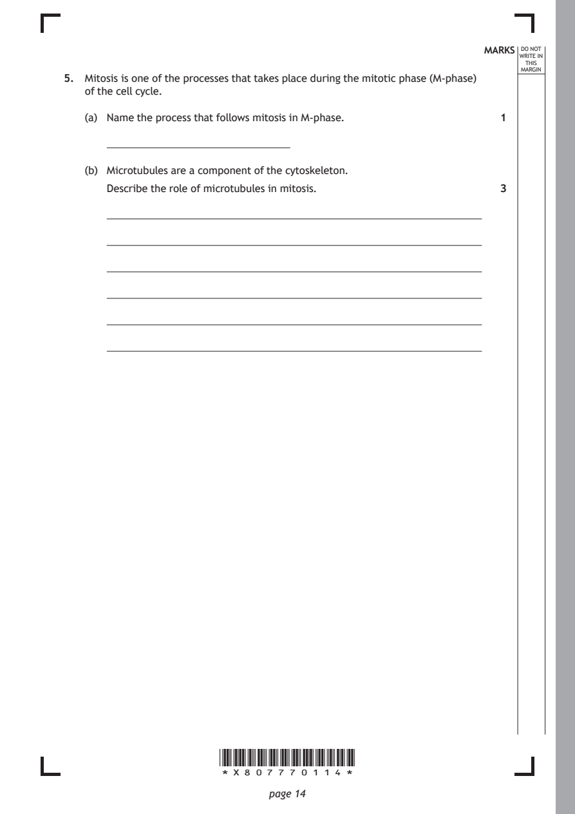
Selectable page text
MARKS _{W}^{D}_{R}^{O}_{I} _{T}^{N}OT
E IN
THIS
MARGIN
5. Mitosis is one of the processes that takes place during the mitotic phase (M‑phase)
of the cell cycle.
(a) Name the process that follows mitosis in M‑phase. 1
(b) Microtubules are a component of the cytoskeleton.
Describe the role of microtubules in mitosis. 3
*X807770114*
page 14PDF page 15
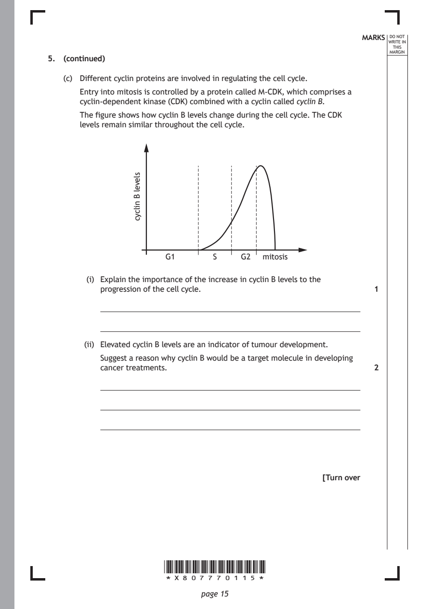
Selectable page text
MARKS _{W}^{D}_{R}^{O}_{I} _{T}^{N}OT
E IN
THIS
MARGIN
5. (continued)
(c) Different cyclin proteins are involved in regulating the cell cycle.
Entry into mitosis is controlled by a protein called M‑CDK, which comprises a
cyclin‑dependent kinase (CDK) combined with a cyclin called cyclin B.
The figure shows how cyclin B levels change during the cell cycle. The CDK
levels remain similar throughout the cell cycle.
*X807770115*
page 15
slevel
B
nilcyc
G1 S G2 mitosis
(i) Explain the importance of the increase in cyclin B levels to the
progression of the cell cycle. 1
(ii) Elevated cyclin B levels are an indicator of tumour development.
Suggest a reason why cyclin B would be a target molecule in developing
cancer treatments. 2
[Turn overPDF page 16
Paper 2, Question 6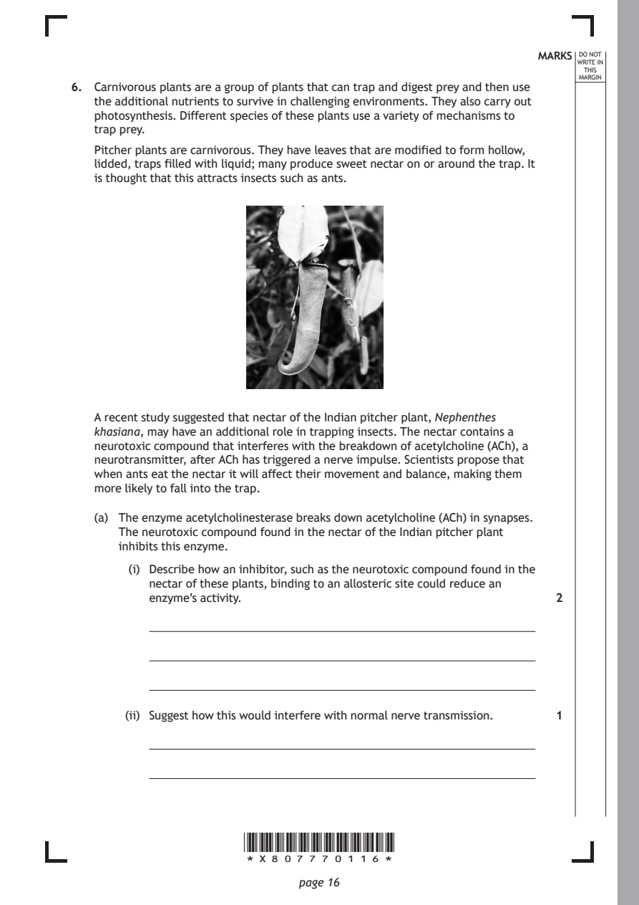
Selectable page text
MARKS _{W}^{D}_{R}^{O}_{I} _{T}^{N}OT
E IN
THIS
MARGIN
6. Carnivorous plants are a group of plants that can trap and digest prey and then use
the additional nutrients to survive in challenging environments. They also carry out
photosynthesis. Different species of these plants use a variety of mechanisms to
trap prey.
Pitcher plants are carnivorous. They have leaves that are modified to form hollow,
lidded, traps filled with liquid; many produce sweet nectar on or around the trap. It
is thought that this attracts insects such as ants.
A recent study suggested that nectar of the Indian pitcher plant, Nephenthes
khasiana, may have an additional role in trapping insects. The nectar contains a
neurotoxic compound that interferes with the breakdown of acetylcholine (ACh), a
neurotransmitter, after ACh has triggered a nerve impulse. Scientists propose that
when ants eat the nectar it will affect their movement and balance, making them
more likely to fall into the trap.
(a) The enzyme acetylcholinesterase breaks down acetylcholine (ACh) in synapses.
The neurotoxic compound found in the nectar of the Indian pitcher plant
inhibits this enzyme.
(i) Describe how an inhibitor, such as the neurotoxic compound found in the
nectar of these plants, binding to an allosteric site could reduce an
enzyme’s activity. 2
(ii) Suggest how this would interfere with normal nerve transmission. 1
*X807770116*
page 16PDF page 17
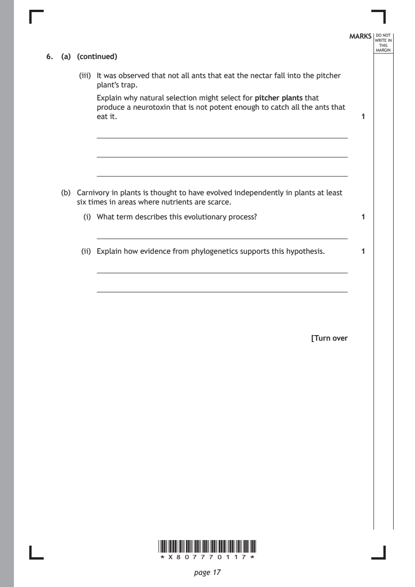
Selectable page text
MARKS _{W}^{D}_{R}^{O}_{I} _{T}^{N}OT
E IN
THIS
MARGIN
6. (a) (continued)
(iii) It was observed that not all ants that eat the nectar fall into the pitcher
plant’s trap.
Explain why natural selection might select for pitcher plants that
produce a neurotoxin that is not potent enough to catch all the ants that
eat it. 1
(b) Carnivory in plants is thought to have evolved independently in plants at least
six times in areas where nutrients are scarce.
(i) What term describes this evolutionary process? 1
(ii) Explain how evidence from phylogenetics supports this hypothesis. 1
[Turn over
*X807770117*
page 17PDF page 18
Paper 2, Question 7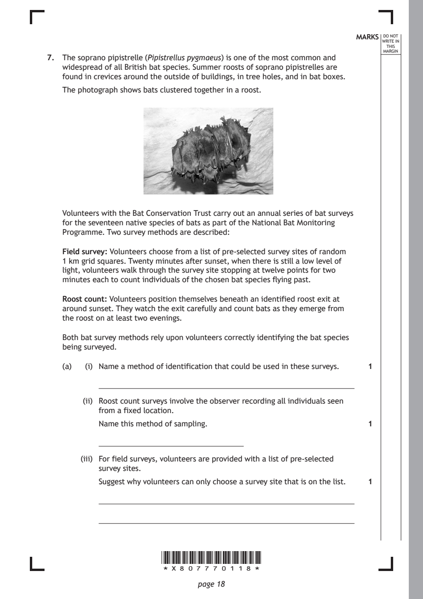
Selectable page text
MARKS _{W}^{D}_{R}^{O}_{I} _{T}^{N}OT
E IN
THIS
MARGIN
7. The soprano pipistrelle (Pipistrellus pygmaeus) is one of the most common and
widespread of all British bat species. Summer roosts of soprano pipistrelles are
found in crevices around the outside of buildings, in tree holes, and in bat boxes.
The photograph shows bats clustered together in a roost.
Volunteers with the Bat Conservation Trust carry out an annual series of bat surveys
for the seventeen native species of bats as part of the National Bat Monitoring
Programme. Two survey methods are described:
Field survey: Volunteers choose from a list of pre‑selected survey sites of random
1 km grid squares. Twenty minutes after sunset, when there is still a low level of
light, volunteers walk through the survey site stopping at twelve points for two
minutes each to count individuals of the chosen bat species flying past.
Roost count: Volunteers position themselves beneath an identified roost exit at
around sunset. They watch the exit carefully and count bats as they emerge from
the roost on at least two evenings.
Both bat survey methods rely upon volunteers correctly identifying the bat species
being surveyed.
(a) (i) Name a method of identification that could be used in these surveys. 1
(ii) Roost count surveys involve the observer recording all individuals seen
from a fixed location.
Name this method of sampling. 1
(iii) For field surveys, volunteers are provided with a list of pre‑selected
survey sites.
Suggest why volunteers can only choose a survey site that is on the list. 1
*X807770118*
page 18PDF page 19
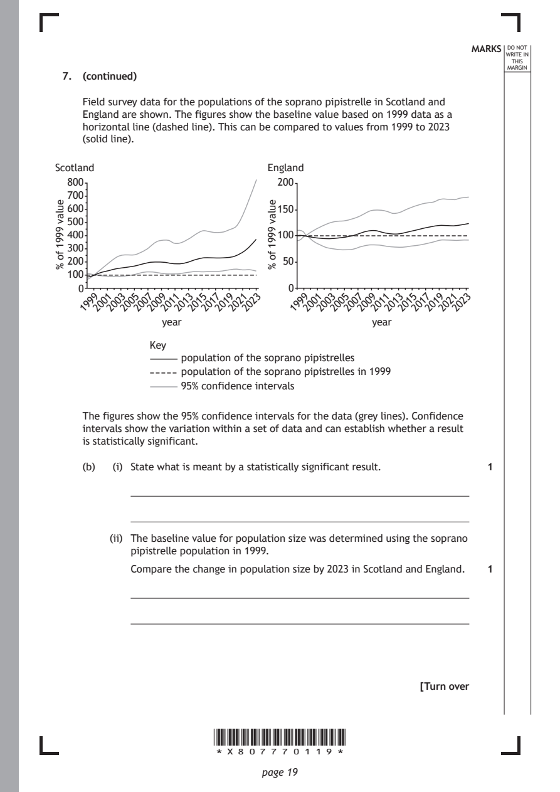
Selectable page text
MARKS _{W}^{D}_{R}^{O}_{I} _{T}^{N}OT
E IN
THIS
MARGIN
7. (continued)
Field survey data for the populations of the soprano pipistrelle in Scotland and
England are shown. The figures show the baseline value based on 1999 data as a
horizontal line (dashed line). This can be compared to values from 1999 to 2023
(solid line).
9135791357913
9000001111122
9000000000000
1222222222222
*X807770119*
page 19
eulav
9991
fo
%
Scotland
800
700
600
500
400
300
200
100
0
year
Key
population of the soprano pipistrelles
population of the soprano pipistrelles in 1999
95% confidence intervals
eulav
9991
fo
%
England
200
150
100
50
0
9135791357913
9000001111122
9000000000000
1222222222222
year
The figures show the 95% confidence intervals for the data (grey lines). Confidence
intervals show the variation within a set of data and can establish whether a result
is statistically significant.
(b) (i) State what is meant by a statistically significant result. 1
(ii) The baseline value for population size was determined using the soprano
pipistrelle population in 1999.
Compare the change in population size by 2023 in Scotland and England. 1
[Turn overPDF page 20
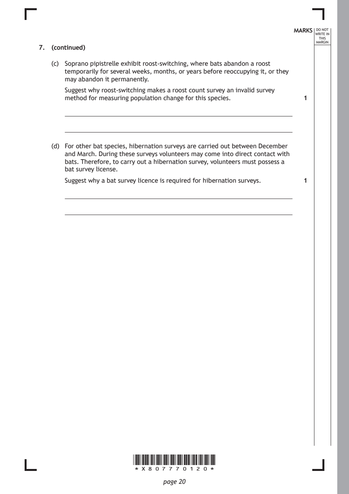
Selectable page text
MARKS _{W}^{D}_{R}^{O}_{I} _{T}^{N}OT
E IN
THIS
MARGIN
7. (continued)
(c) Soprano pipistrelle exhibit roost‑switching, where bats abandon a roost
temporarily for several weeks, months, or years before reoccupying it, or they
may abandon it permanently.
Suggest why roost‑switching makes a roost count survey an invalid survey
method for measuring population change for this species. 1
(d) For other bat species, hibernation surveys are carried out between December
and March. During these surveys volunteers may come into direct contact with
bats. Therefore, to carry out a hibernation survey, volunteers must possess a
bat survey license.
Suggest why a bat survey licence is required for hibernation surveys. 1
*X807770120*
page 20PDF page 21
Paper 2, Question 8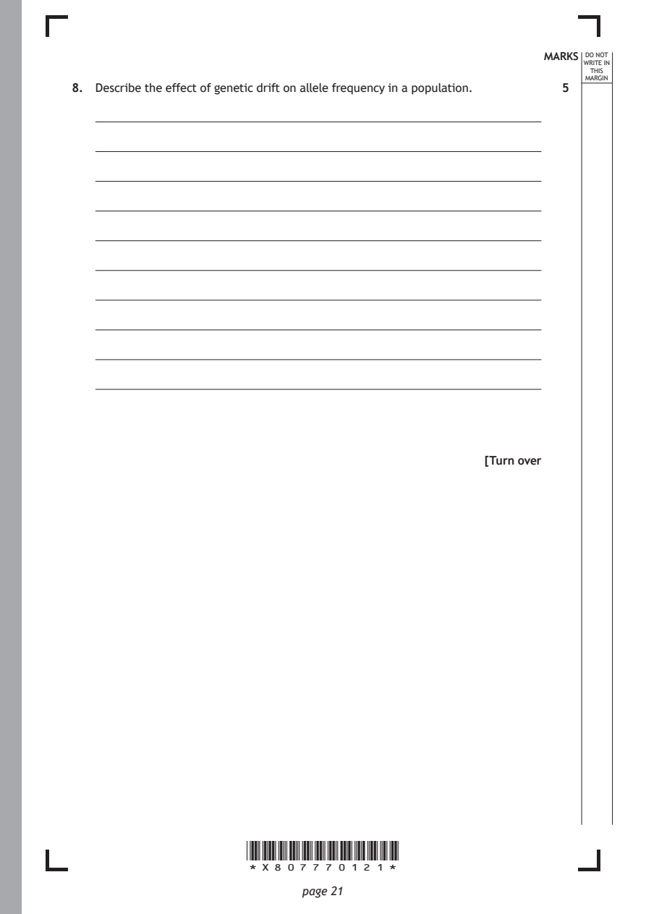
Selectable page text
MARKS _{W}^{D}_{R}^{O}_{I} _{T}^{N}OT
E IN
THIS
ARGIN
8. Describe the effect of genetic drift on allele frequency in a population. 5 ^{M}
[Turn over
*X807770121*
page 21PDF page 22
Paper 2, Question 9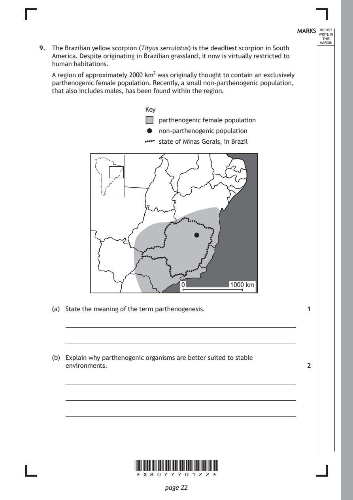
Selectable page text
MARKS _{W}^{D}_{R}^{O}_{I} _{T}^{N}OT
E IN
THIS
MARGIN
9. The Brazilian yellow scorpion (Tityus serrulatus) is the deadliest scorpion in South
America. Despite originating in Brazilian grassland, it now is virtually restricted to
human habitations.
A region of approximately 2000 km² was originally thought to contain an exclusively
parthenogenic female population. Recently, a small non‑parthenogenic population,
that also includes males, has been found within the region.
Key
parthenogenic female population
non-parthenogenic population
state of Minas Gerais, in Brazil
0 1000 km
(a) State the meaning of the term parthenogenesis. 1
(b) Explain why parthenogenic organisms are better suited to stable
environments. 2
*X807770122*
page 22PDF page 23
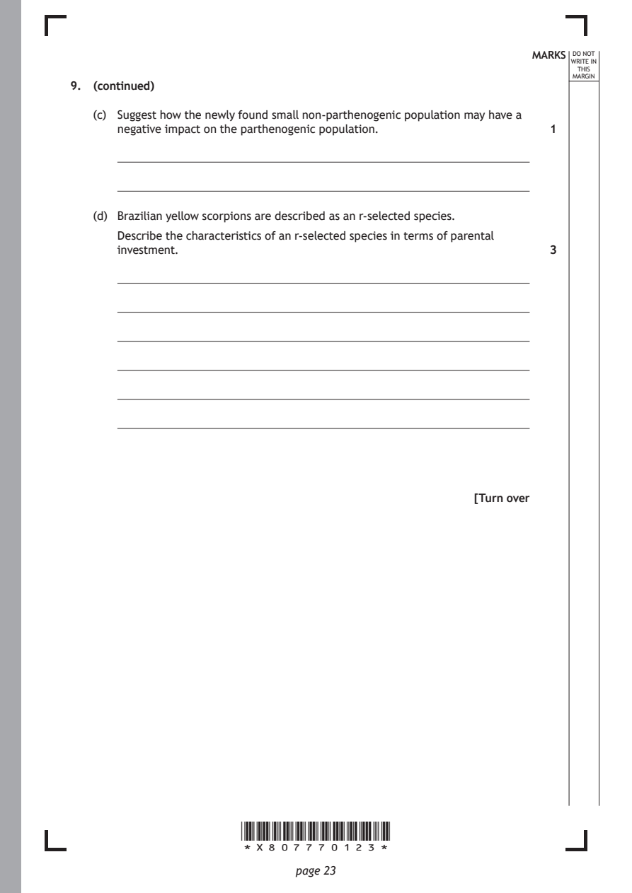
Selectable page text
MARKS _{W}^{D}_{R}^{O}_{I} _{T}^{N}OT
E IN
THIS
MARGIN
9. (continued)
(c) Suggest how the newly found small non‑parthenogenic population may have a
negative impact on the parthenogenic population. 1
(d) Brazilian yellow scorpions are described as an r‑selected species.
Describe the characteristics of an r‑selected species in terms of parental
investment. 3
[Turn over
*X807770123*
page 23PDF page 24
Paper 2, Question 10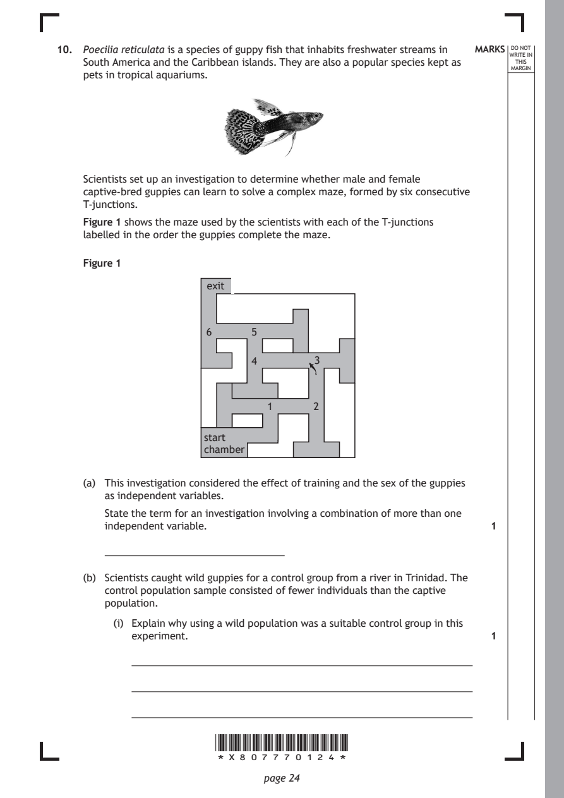
Selectable page text
10. Poecilia reticulata is a species of guppy fish that inhabits freshwater streams in MARKS _{W}^{D}_{R}^{O}_{I} _{T}^{N}OT
E IN
South America and the Caribbean islands. They are also a popular species kept as THIS
MARGIN
pets in tropical aquariums.
Scientists set up an investigation to determine whether male and female
captive‑bred guppies can learn to solve a complex maze, formed by six consecutive
T‑junctions.
Figure 1 shows the maze used by the scientists with each of the T‑junctions
labelled in the order the guppies complete the maze.
Figure 1
exit
6 5
4 3
1 2
start
chamber
(a) This investigation considered the effect of training and the sex of the guppies
as independent variables.
State the term for an investigation involving a combination of more than one
independent variable. 1
(b) Scientists caught wild guppies for a control group from a river in Trinidad. The
control population sample consisted of fewer individuals than the captive
population.
(i) Explain why using a wild population was a suitable control group in this
experiment. 1
*X807770124*
page 24PDF page 25
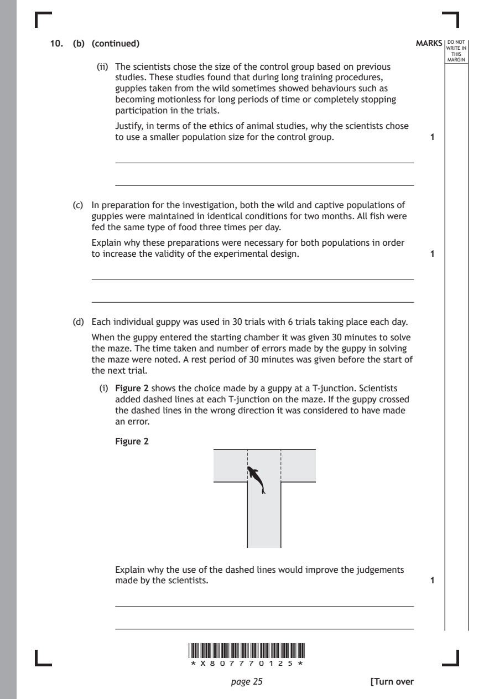
Selectable page text
10. (b) (continued) MARKS _{W}^{D}_{R}^{O}_{I} _{T}^{N}OT
E IN
THIS
MARGIN
(ii) The scientists chose the size of the control group based on previous
studies. These studies found that during long training procedures,
guppies taken from the wild sometimes showed behaviours such as
becoming motionless for long periods of time or completely stopping
participation in the trials.
Justify, in terms of the ethics of animal studies, why the scientists chose
to use a smaller population size for the control group. 1
(c) In preparation for the investigation, both the wild and captive populations of
guppies were maintained in identical conditions for two months. All fish were
fed the same type of food three times per day.
Explain why these preparations were necessary for both populations in order
to increase the validity of the experimental design. 1
(d) Each individual guppy was used in 30 trials with 6 trials taking place each day.
When the guppy entered the starting chamber it was given 30 minutes to solve
the maze. The time taken and number of errors made by the guppy in solving
the maze were noted. A rest period of 30 minutes was given before the start of
the next trial.
(i) Figure 2 shows the choice made by a guppy at a T‑junction. Scientists
added dashed lines at each T‑junction on the maze. If the guppy crossed
the dashed lines in the wrong direction it was considered to have made
an error.
Figure 2
Explain why the use of the dashed lines would improve the judgements
made by the scientists. 1
*X807770125*
page 25 [Turn overPDF page 26
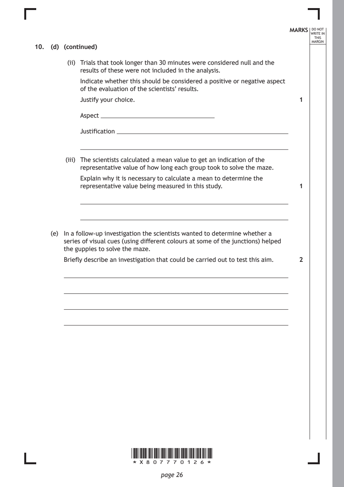
Selectable page text
MARKS _{W}^{D}_{R}^{O}_{I} _{T}^{N}OT
E IN
THIS
MARGIN
10. (d) (continued)
(ii) Trials that took longer than 30 minutes were considered null and the
results of these were not included in the analysis.
Indicate whether this should be considered a positive or negative aspect
of the evaluation of the scientists’ results.
Justify your choice. 1
Aspect
Justification
(iii) The scientists calculated a mean value to get an indication of the
representative value of how long each group took to solve the maze.
Explain why it is necessary to calculate a mean to determine the
representative value being measured in this study. 1
(e) In a follow‑up investigation the scientists wanted to determine whether a
series of visual cues (using different colours at some of the junctions) helped
the guppies to solve the maze.
Briefly describe an investigation that could be carried out to test this aim. 2
*X807770126*
page 26PDF page 27
Paper 2, Question 11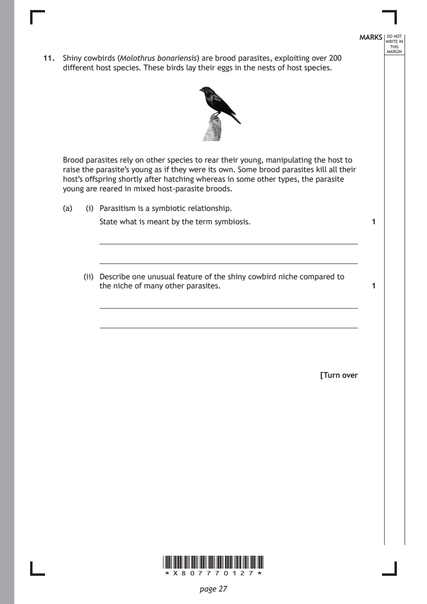
Selectable page text
MARKS _{W}^{D}_{R}^{O}_{I} _{T}^{N}OT
E IN
THIS
MARGIN
11. Shiny cowbirds (Molothrus bonariensis) are brood parasites, exploiting over 200
different host species. These birds lay their eggs in the nests of host species.
Brood parasites rely on other species to rear their young, manipulating the host to
raise the parasite’s young as if they were its own. Some brood parasites kill all their
host’s offspring shortly after hatching whereas in some other types, the parasite
young are reared in mixed host‑parasite broods.
(a) (i) Parasitism is a symbiotic relationship.
State what is meant by the term symbiosis. 1
(ii) Describe one unusual feature of the shiny cowbird niche compared to
the niche of many other parasites. 1
[Turn over
*X807770127*
page 27PDF page 28
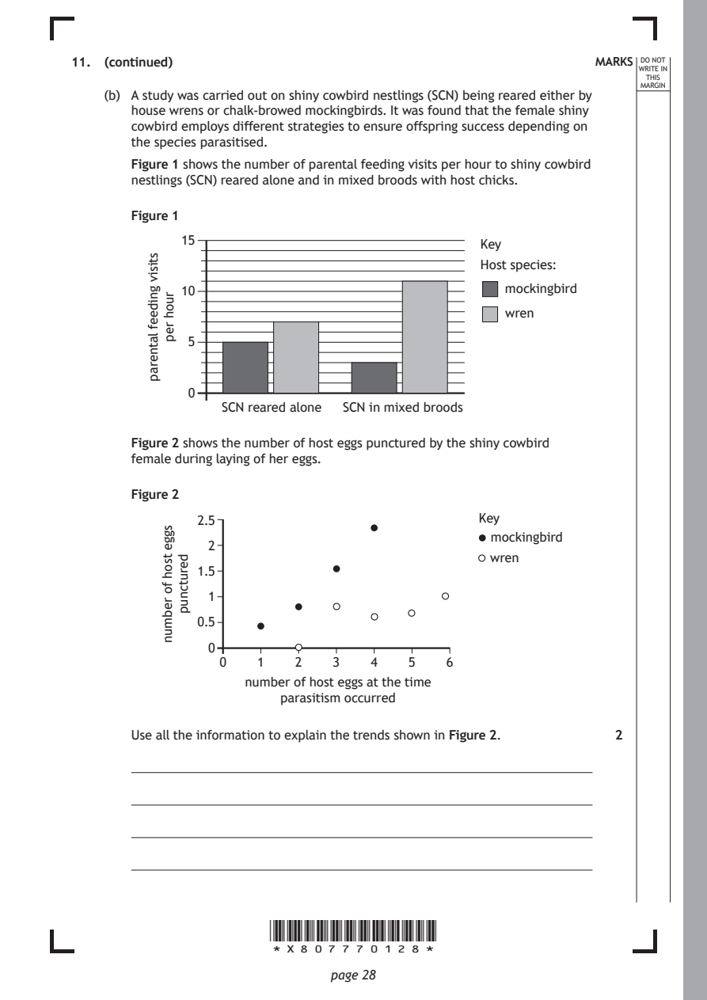
Selectable page text
11. (continued) MARKS _{W}^{D}_{R}^{O}_{I} _{T}^{N}OT
E IN
THIS
MARGIN
(b) A study was carried out on shiny cowbird nestlings (SCN) being reared either by
house wrens or chalk‑browed mockingbirds. It was found that the female shiny
cowbird employs different strategies to ensure offspring success depending on
the species parasitised.
Figure 1 shows the number of parental feeding visits per hour to shiny cowbird
nestlings (SCN) reared alone and in mixed broods with host chicks.
Figure 1
15
10 mockingbird
5
0
SCN reared alone
*X807770128*
page 28
stisiv
gnideef
latnerap
ruoh
rep
Key
Host species:
wren
SCN in mixed broods
Figure 2 shows the number of host eggs punctured by the shiny cowbird
female during laying of her eggs.
Figure 2
2.5
2
1.5
1
0.5
0
1
number of host eggs at the time
parasitism occurred
sgge
tsoh
fo
rebmun
derutcnup
Key
mockingbird
wren
0 2 3 4 5 6
Use all the information to explain the trends shown in Figure 2. 2PDF page 29
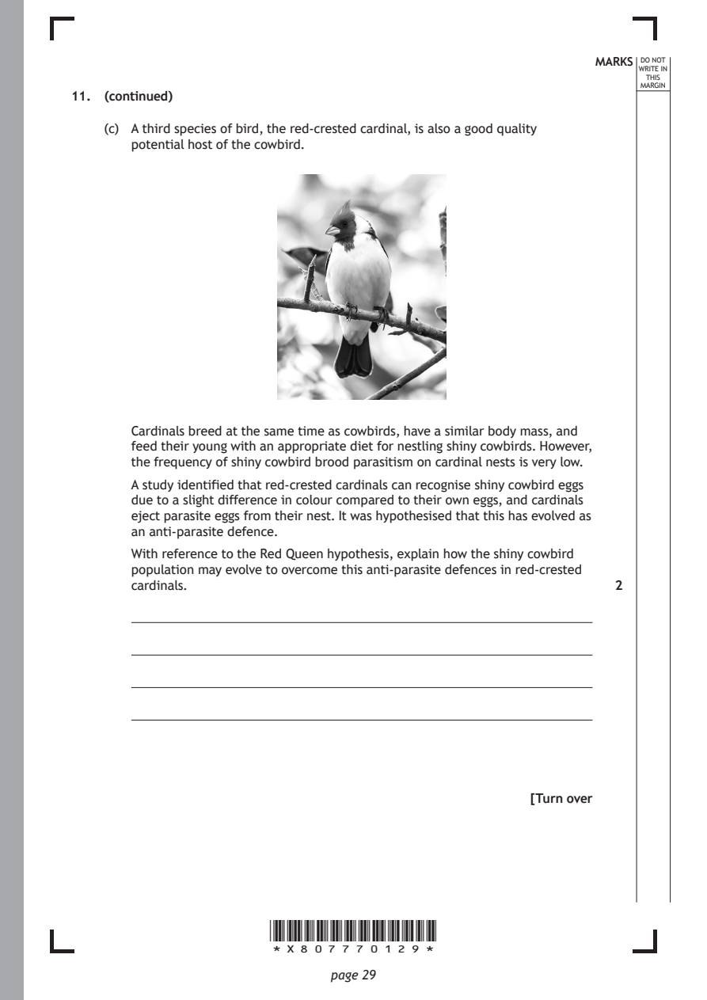
Selectable page text
MARKS _{W}^{D}_{R}^{O}_{I} _{T}^{N}OT
E IN
THIS
MARGIN
11. (continued)
(c) A third species of bird, the red‑crested cardinal, is also a good quality
potential host of the cowbird.
Cardinals breed at the same time as cowbirds, have a similar body mass, and
feed their young with an appropriate diet for nestling shiny cowbirds. However,
the frequency of shiny cowbird brood parasitism on cardinal nests is very low.
A study identified that red‑crested cardinals can recognise shiny cowbird eggs
due to a slight difference in colour compared to their own eggs, and cardinals
eject parasite eggs from their nest. It was hypothesised that this has evolved as
an anti‑parasite defence.
With reference to the Red Queen hypothesis, explain how the shiny cowbird
population may evolve to overcome this anti‑parasite defences in red‑crested
cardinals. 2
[Turn over
*X807770129*
page 29PDF page 30
Paper 2, Question 12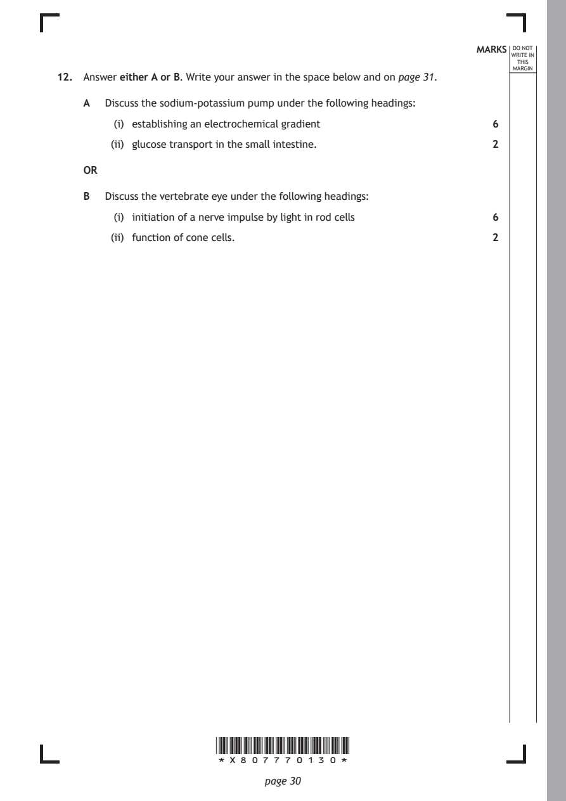
Selectable page text
MARKS _{W}^{D}_{R}^{O}_{I} _{T}^{N}OT
E IN
THIS
MARGIN
12. Answer either A or B. Write your answer in the space below and on page 31.
A Discuss the sodium‑potassium pump under the following headings:
(i) establishing an electrochemical gradient 6
(ii) glucose transport in the small intestine. 2
OR
B Discuss the vertebrate eye under the following headings:
(i) initiation of a nerve impulse by light in rod cells 6
(ii) function of cone cells. 2
*X807770130*
page 30PDF page 31
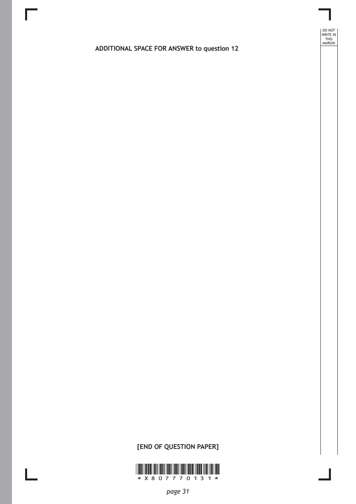
Selectable page text
DO NOT
WRITE IN
THIS
MARGIN
ADDITIONAL SPACE FOR ANSWER to question 12
[END OF QUESTION PAPER]
*X807770131*
page 31PDF page 32
Selectable page text
DO NOT
WRITE IN
THIS
MARGIN
ADDITIONAL SPACE FOR ANSWERS AND ROUGH WORK
*X807770132*
page 32PDF page 33
Selectable page text
DO NOT
WRITE IN
THIS
MARGIN
ADDITIONAL SPACE FOR ANSWERS AND ROUGH WORK
*X807770133*
page 33PDF page 34
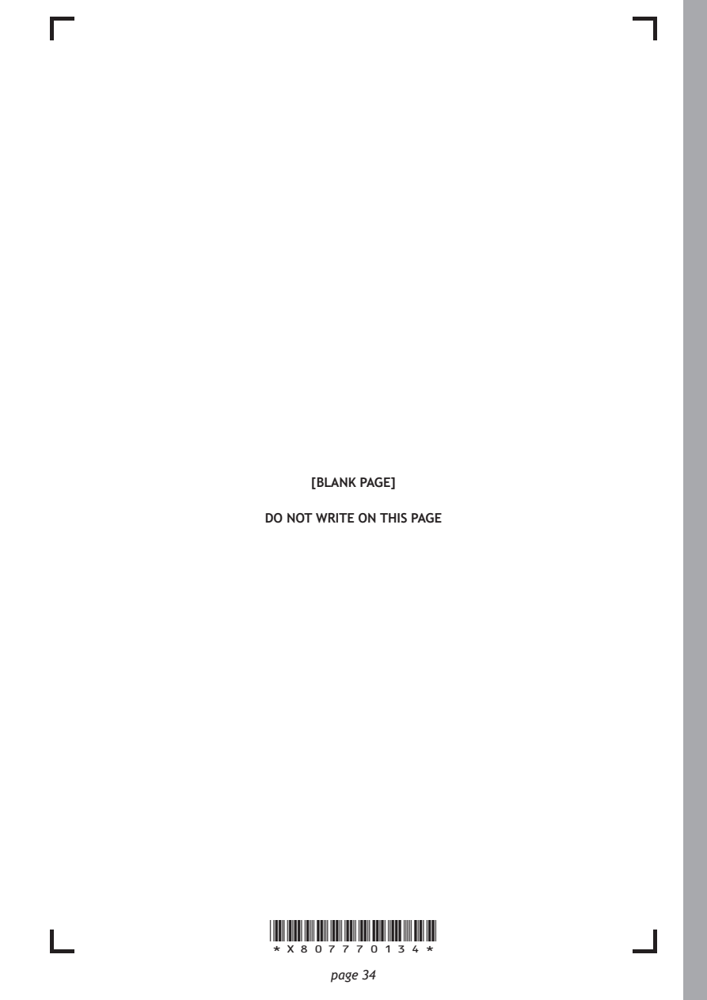
Selectable page text
[BLANK PAGE]
DO NOT WRITE ON THIS PAGE
*X807770134*
page 34PDF page 35
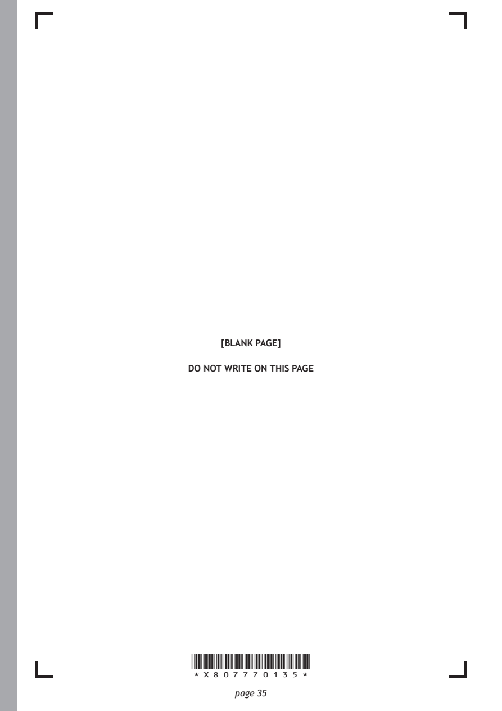
Selectable page text
[BLANK PAGE]
DO NOT WRITE ON THIS PAGE
*X807770135*
page 35PDF page 36
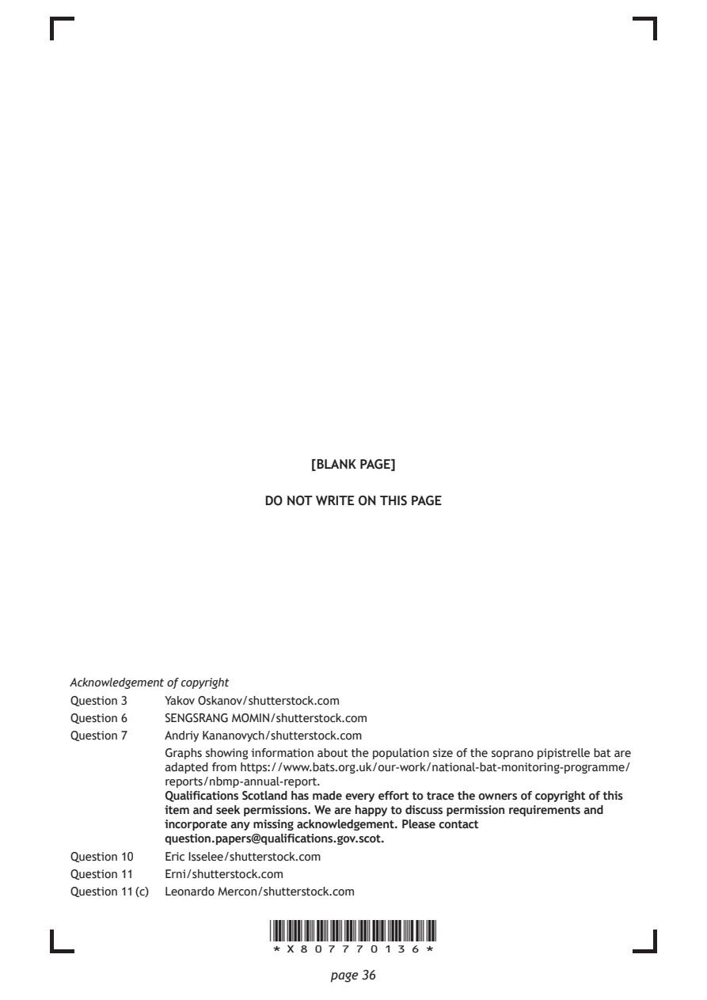
Selectable page text
[BLANK PAGE]
DO NOT WRITE ON THIS PAGE
Acknowledgement of copyright
Question 3 Yakov Oskanov/shutterstock.com
Question 6 SENGSRANG MOMIN/shutterstock.com
Question 7 Andriy Kananovych/shutterstock.com
Graphs showing information about the population size of the soprano pipistrelle bat are
adapted from https://www.bats.org.uk/our‑work/national‑bat‑monitoring‑programme/
reports/nbmp‑annual‑report.
Qualifications Scotland has made every effort to trace the owners of copyright of this
item and seek permissions. We are happy to discuss permission requirements and
incorporate any missing acknowledgement. Please contact
question.papers@qualifications.gov.scot.
Question 10 Eric Isselee/shutterstock.com
Question 11 Erni/shutterstock.com
Question 11 (c) Leonardo Mercon/shutterstock.com
*X807770136*
page 36